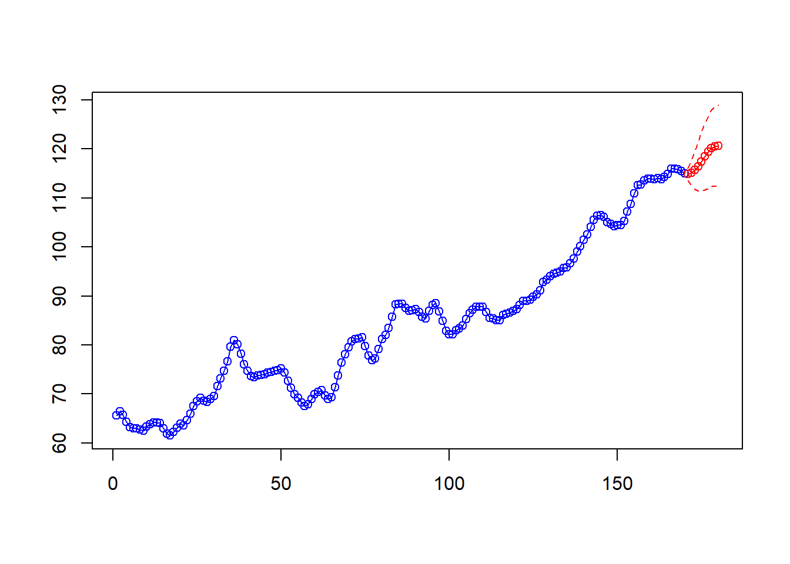

#libraries
library(car)
library(ltsa)
library(itsmr)
library(astsa)
library(itsmr)
library(forecast)Hector Gavilanes
Forecasting using the following:
ARAR algorithm for forecasting
Holt- Winters exponential smoothing algorithm
SARIMA models for forecasting
Chicken Data
# plot
plot(chicken)# ACF plot
acf(chicken,lag.max = 100)# data model
M=c("diff",1,"diff",12)
r = Resid(chicken,M)
test(r)Null hypothesis: Residuals are iid noise.
Test Distribution Statistic p-value
Ljung-Box Q Q ~ chisq(20) 236.56 0 *
McLeod-Li Q Q ~ chisq(20) 69.81 0 *
Turning points T (T-110)/5.4 ~ N(0,1) 85 0 *
Diff signs S (S-83)/3.7 ~ N(0,1) 89 0.1088
Rank P (P-6930.5)/361.3 ~ N(0,1) 6323 0.0927Stationary Test
# Augmented Dickey-Fuller Test
# H0: X_t is a non-stationary time series
# H1: X_t is a stationary time series
library(aTSA)
adf.test(r)Augmented Dickey-Fuller Test
alternative: stationary
Type 1: no drift no trend
lag ADF p.value
[1,] 0 -5.00 0.01
[2,] 1 -5.54 0.01
[3,] 2 -5.42 0.01
[4,] 3 -4.45 0.01
[5,] 4 -4.15 0.01
Type 2: with drift no trend
lag ADF p.value
[1,] 0 -4.98 0.01
[2,] 1 -5.53 0.01
[3,] 2 -5.41 0.01
[4,] 3 -4.43 0.01
[5,] 4 -4.14 0.01
Type 3: with drift and trend
lag ADF p.value
[1,] 0 -5.03 0.01
[2,] 1 -5.58 0.01
[3,] 2 -5.46 0.01
[4,] 3 -4.47 0.01
[5,] 4 -4.17 0.01
----
Note: in fact, p.value = 0.01 means p.value <= 0.01 No differencing is needed.
SARIMA Models
# Potential Values
# based on the PACF
# p = 0, 1, 2
# P = 0, 1, 2
# based on the ACF
# q = 0, 1, 2, 3, 9, 10, 11
# Q = 0, 1, 2,
# Eliminate Trend and Season
# d = 1
# D = 1
# SARIMA (1,1,1)x(1,1,1)12
fit1 = arima(chicken,
order = c(1,1,1),
seasonal = list(order=c(1,1,1),period=12))
test(fit1$residuals)Null hypothesis: Residuals are iid noise.
Test Distribution Statistic p-value
Ljung-Box Q Q ~ chisq(20) 26.41 0.1526
McLeod-Li Q Q ~ chisq(20) 26.03 0.165
Turning points T (T-118.7)/5.6 ~ N(0,1) 113 0.314
Diff signs S (S-89.5)/3.9 ~ N(0,1) 90 0.8976
Rank P (P-8055)/404.2 ~ N(0,1) 7885 0.674confint(fit1) 2.5 % 97.5 %
ar1 0.46878995 0.7763438
ma1 0.06514557 0.4192904
sar1 -0.16334103 0.2108869
sma1 -1.09510886 -0.6989799# SARIMA (1,1,1)x(2,1,1)12
fit2 = arima(chicken,
order = c(1,1,1),
seasonal = list(order=c(2,1,1),period=12))
test(fit2$residuals)Null hypothesis: Residuals are iid noise.
Test Distribution Statistic p-value
Ljung-Box Q Q ~ chisq(20) 24.24 0.2322
McLeod-Li Q Q ~ chisq(20) 25.54 0.1816
Turning points T (T-118.7)/5.6 ~ N(0,1) 115 0.5147
Diff signs S (S-89.5)/3.9 ~ N(0,1) 92 0.5198
Rank P (P-8055)/404.2 ~ N(0,1) 7864 0.6365confint(fit2) 2.5 % 97.5 %
ar1 0.45832025 0.77089400
ma1 0.04960548 0.40221488
sar1 -0.28700520 0.10441249
sar2 -0.41013308 -0.05367367
sma1 -0.93736536 -0.59307991AutoFit
# Auto fit
bestmodel = auto.arima(chicken, trace= TRUE)
Fitting models using approximations to speed things up...
ARIMA(2,1,2)(1,0,1)[12] with drift : Inf
ARIMA(0,1,0) with drift : 512.1327
ARIMA(1,1,0)(1,0,0)[12] with drift : 357.8553
ARIMA(0,1,1)(0,0,1)[12] with drift : 399.0111
ARIMA(0,1,0) : 521.4674
ARIMA(1,1,0) with drift : 380.5252
ARIMA(1,1,0)(2,0,0)[12] with drift : 361.1736
ARIMA(1,1,0)(1,0,1)[12] with drift : Inf
ARIMA(1,1,0)(0,0,1)[12] with drift : 361.7262
ARIMA(1,1,0)(2,0,1)[12] with drift : Inf
ARIMA(0,1,0)(1,0,0)[12] with drift : 496.251
ARIMA(2,1,0)(1,0,0)[12] with drift : 349.6098
ARIMA(2,1,0) with drift : 361.2204
ARIMA(2,1,0)(2,0,0)[12] with drift : 352.9452
ARIMA(2,1,0)(1,0,1)[12] with drift : Inf
ARIMA(2,1,0)(0,0,1)[12] with drift : 347.5637
ARIMA(2,1,0)(0,0,2)[12] with drift : 348.8669
ARIMA(2,1,0)(1,0,2)[12] with drift : Inf
ARIMA(3,1,0)(0,0,1)[12] with drift : 346.8076
ARIMA(3,1,0) with drift : 359.6763
ARIMA(3,1,0)(1,0,1)[12] with drift : Inf
ARIMA(3,1,0)(0,0,2)[12] with drift : 348.5706
ARIMA(3,1,0)(1,0,0)[12] with drift : 350.3946
ARIMA(3,1,0)(1,0,2)[12] with drift : Inf
ARIMA(4,1,0)(0,0,1)[12] with drift : 349.2894
ARIMA(3,1,1)(0,0,1)[12] with drift : 347.6645
ARIMA(2,1,1)(0,0,1)[12] with drift : 346.754
ARIMA(2,1,1) with drift : 359.2506
ARIMA(2,1,1)(1,0,1)[12] with drift : Inf
ARIMA(2,1,1)(0,0,2)[12] with drift : 348.4092
ARIMA(2,1,1)(1,0,0)[12] with drift : 350.2436
ARIMA(2,1,1)(1,0,2)[12] with drift : Inf
ARIMA(1,1,1)(0,0,1)[12] with drift : 354.7731
ARIMA(2,1,2)(0,0,1)[12] with drift : 348.0198
ARIMA(1,1,2)(0,0,1)[12] with drift : 348.7836
ARIMA(3,1,2)(0,0,1)[12] with drift : 349.5839
ARIMA(2,1,1)(0,0,1)[12] : 347.2775
Now re-fitting the best model(s) without approximations...
ARIMA(2,1,1)(0,0,1)[12] with drift : 351.5017
Best model: ARIMA(2,1,1)(0,0,1)[12] with drift test(bestmodel$residuals)Null hypothesis: Residuals are iid noise.
Test Distribution Statistic p-value
Ljung-Box Q Q ~ chisq(20) 20.39 0.4339
McLeod-Li Q Q ~ chisq(20) 25.62 0.1789
Turning points T (T-118.7)/5.6 ~ N(0,1) 126 0.1926
Diff signs S (S-89.5)/3.9 ~ N(0,1) 96 0.0942
Rank P (P-8055)/404.2 ~ N(0,1) 8124 0.8644# SARIMA (2,1,1)x(0,1,1)12
fit3 = arima(chicken,
order = c(2,1,1),
seasonal = list(order=c(0,1,1),period=12))
test(fit3$residuals)Null hypothesis: Residuals are iid noise.
Test Distribution Statistic p-value
Ljung-Box Q Q ~ chisq(20) 24.19 0.2342
McLeod-Li Q Q ~ chisq(20) 24.05 0.2403
Turning points T (T-118.7)/5.6 ~ N(0,1) 109 0.0859
Diff signs S (S-89.5)/3.9 ~ N(0,1) 90 0.8976
Rank P (P-8055)/404.2 ~ N(0,1) 7886 0.6758confint(fit3) 2.5 % 97.5 %
ar1 0.3663564 1.3562134
ar2 -0.5707718 0.1810214
ma1 -0.4705853 0.5126439
sma1 -1.0460512 -0.7262905# SARIMA (1,1,1)x(0,1,1)12
fit4 = arima(chicken,
order = c(1,1,1),
seasonal = list(order=c(0,1,1),period=12))
test(fit4$residuals)Null hypothesis: Residuals are iid noise.
Test Distribution Statistic p-value
Ljung-Box Q Q ~ chisq(20) 26.57 0.1478
McLeod-Li Q Q ~ chisq(20) 25.56 0.1808
Turning points T (T-118.7)/5.6 ~ N(0,1) 113 0.314
Diff signs S (S-89.5)/3.9 ~ N(0,1) 90 0.8976
Rank P (P-8055)/404.2 ~ N(0,1) 7871 0.6489confint(fit4) 2.5 % 97.5 %
ar1 0.4681032 0.7760098
ma1 0.0658718 0.4202848
sma1 -1.0423739 -0.7267580# SARIMA (1,1,0)x(0,1,1)12
fit5 = arima(chicken,
order = c(1,1,0),
seasonal = list(order=c(0,1,1),period=12))
test(fit5$residuals)Null hypothesis: Residuals are iid noise.
Test Distribution Statistic p-value
Ljung-Box Q Q ~ chisq(20) 45.3 0.001 *
McLeod-Li Q Q ~ chisq(20) 27.08 0.133
Turning points T (T-118.7)/5.6 ~ N(0,1) 105 0.0152 *
Diff signs S (S-89.5)/3.9 ~ N(0,1) 93 0.3675
Rank P (P-8055)/404.2 ~ N(0,1) 7762 0.4685confint(fit5) 2.5 % 97.5 %
ar1 0.6273766 0.8369342
sma1 -0.9925757 -0.7215920Fit 5 is not stationary. It will not be used.
Models Comparison
## Compare
AIC.values = c(
AutoModel = bestmodel$aic,
fit1 = fit1$aic,
fit2 = fit2$aic,
fit3 = fit3$aic,
fit4 = fit4$aic
)
AIC.valuesAutoModel fit1 fit2 fit3 fit4
351.0134 317.9969 314.2806 317.2427 316.0594 The SARIMA equation for (2,1,1)x(0,1,1)12 is:
\[ (1-0.861B+0.195B^2)(1-B)(1-B^{12})X_t = (1+0.021B)(1-0.886B^{12})Z_t \]
\[ Z_t \sim WN(0,0.329) \]
Forecating with Time Series
chicken_train = chicken[1:170]
# SARIMA (1,1,1)x(1,1,1)12
fit1 = arima(chicken_train,
order = c(1,1,1),
seasonal = list(order=c(1,1,1),period=12))
# SARIMA (1,1,1)x(2,1,1)12
fit2 = arima(chicken_train,
order = c(1,1,1),
seasonal = list(order=c(2,1,1),period=12))
# Auto fit
bestmodel = auto.arima(chicken_train, trace= TRUE)
Fitting models using approximations to speed things up...
ARIMA(2,1,2) with drift : 347.0167
ARIMA(0,1,0) with drift : 488.3928
ARIMA(1,1,0) with drift : 366.5475
ARIMA(0,1,1) with drift : 397.7907
ARIMA(0,1,0) : 499.836
ARIMA(1,1,2) with drift : 351.2362
ARIMA(2,1,1) with drift : 344.8664
ARIMA(1,1,1) with drift : 357.355
ARIMA(2,1,0) with drift : 347.3834
ARIMA(3,1,1) with drift : 344.7761
ARIMA(3,1,0) with drift : 345.4701
ARIMA(4,1,1) with drift : Inf
ARIMA(3,1,2) with drift : Inf
ARIMA(4,1,0) with drift : 348.4639
ARIMA(4,1,2) with drift : Inf
ARIMA(3,1,1) : Inf
Now re-fitting the best model(s) without approximations...
ARIMA(3,1,1) with drift : Inf
ARIMA(2,1,1) with drift : 349.2716
Best model: ARIMA(2,1,1) with drift bestmodel = arima(chicken_train, order = c(2,1,1))
# SARIMA (2,1,1)x(0,1,1)12
fit3 = arima(chicken_train,
order = c(2,1,1),
seasonal = list(order=c(0,1,1),period=12))
# SARIMA (1,1,1)x(0,1,1)12
fit4 = arima(chicken_train,
order = c(1,1,1),
seasonal = list(order=c(0,1,1),period=12))
# SARIMA (1,1,0)x(0,1,1)12
fit5 = arima(chicken_train,
order = c(1,1,0),
seasonal = list(order=c(0,1,1),period=12))Using Forecast Function
f1 = aTSA::forecast(object = fit1,lead = 10,output = FALSE)
f2 = aTSA::forecast(object = fit2,lead = 10,output = FALSE)
f3 = aTSA::forecast(object = fit3,lead = 10,output = FALSE)
f4 = aTSA::forecast(object = fit4,lead = 10,output = FALSE)
f5 = aTSA::forecast(object = fit5,lead = 10,output = FALSE)
f.auto = aTSA::forecast(object = bestmodel,lead = 10,output = FALSE)ARAR Algorithm for Forecasting
arar.prd = arar(chicken_train, h=10)Optimal lags 1 3 7 26
Optimal coeffs 0.7649962 -0.2222783 -0.1879812 -0.1420048
WN Variance 0.4066505
Filter 1 -1.76855 0.7677147 0.2222783 -0.2230682 0 0 0.1879812 -0.1886492 0 0 0 0 0 0 0 0 0 0 0 0 0 0 0 0 0 0.1420048 -0.1425095
Step Prediction sqrt(MSE) Lower Bound Upper Bound
1 114.8751 0.6376915 113.6252 116.125
2 115.1194 1.295592 112.58 117.6587
3 115.6783 1.985836 111.786 119.5705
4 116.4949 2.584476 111.4294 121.5605
5 117.4627 3.072466 111.4406 123.4847
6 118.4573 3.457484 111.6806 125.2339
7 119.4271 3.767544 112.0427 126.8115
8 120.1903 3.988641 112.3726 128.0081
9 120.5408 4.135788 112.4347 128.647
10 120.5941 4.22821 112.3068 128.8814
HWmodel = HoltWinters(ts(chicken_train,start=1,frequency = 12),seasonal = "mult")
HW.prd =forecast::forecast(HWmodel,10)Forecasting Performance Evaluation
library(Metrics)
MAPE1 = mape(chicken[171:180],f1[,2])*100
MAPE2 = mape(chicken[171:180],f2[,2])*100
MAPE3 = mape(chicken[171:180],f3[,2])*100
MAPE4 = mape(chicken[171:180],f4[,2])*100
MAPE5 = mape(chicken[171:180],f5[,2])*100
MAPEauto = mape(chicken[171:180],f.auto[,2])*100
MAPEarar = mape(chicken[171:180],arar.prd$pred)*100
MAPEhw = mape(chicken[171:180],HW.prd$mean)*100
MAPEs = c(fit1_mape = MAPE1,
fit2_mape = MAPE2,
fit3_mape = MAPE3,
fit4_mape = MAPE4,
fit5_mape = MAPE5,
fitauto_mape = MAPEauto,
arar.model = MAPEarar,
hw.model = MAPEhw)
MAPEs fit1_mape fit2_mape fit3_mape fit4_mape fit5_mape fitauto_mape
2.245804 2.707520 2.361666 2.248047 2.130850 1.942902
arar.model hw.model
4.926459 1.651263 US Employment Data
library(fpp3)
us_empl = us_employment %>%
filter(year(Month)>2009, Title=="All Employees, Total Nonfarm") %>%
select(-Series_ID)
us_empl %>%
autoplot(Employed)auto.arima(us_empl$Employed)Series: us_empl$Employed
ARIMA(3,1,1) with drift
Coefficients:
ar1 ar2 ar3 ma1 drift
0.5173 -0.2112 -0.3101 -0.9059 198.7101
s.e. 0.0944 0.0974 0.0926 0.0499 8.0855
sigma^2 = 715029: log likelihood = -945.12
AIC=1902.24 AICc=1903.01 BIC=1918.76empl_data = us_empl$Employed
acf(empl_data,lag.max = 100)M = c("diff",1,"diff",12)
r = Resid(empl_data,M)
test(r)Null hypothesis: Residuals are iid noise.
Test Distribution Statistic p-value
Ljung-Box Q Q ~ chisq(20) 36.26 0.0143 *
McLeod-Li Q Q ~ chisq(20) 16.13 0.7087
Turning points T (T-68)/4.3 ~ N(0,1) 73 0.2408
Diff signs S (S-51.5)/3 ~ N(0,1) 54 0.398
Rank P (P-2678)/178 ~ N(0,1) 2339 0.0569p = c(0,1,6,11)
P = c(0,1)
q = c(0,1,11)
Q = c(0,1)
all = expand_grid(p,P,q,Q)
# this function fit a SARIM model, forecast, and calculate the mape
fit = function(x,p,d,q,P,D,Q,s,h){
# x train
x_train = x[1:I(length(x)-h)]
# fit the model
ft = arima(x_train,
order = c(p,d,q) ,
seasonal = list(order=c(P,D,Q),period=s))
# predict the h ahead point using SARIMA
prd = predict(ft,h)$pred[1:h]
# fit and predict using Holt-Winters
HWmodel = HoltWinters(ts(x_train,start=1,frequency = s),seasonal = "mult")
prdhw = forecast::forecast(HWmodel,h)
# fit and predict using ARAR
prdarar = arar(x_train,h,opt=0)
# actual data
actual = x[I(length(x)-h+1):length(x)]
# return the mape
return(c(sarima=100*mape(actual,prd),
arar = 100*mape(actual,prdarar$pred),
hw = 100*mape(actual,prdhw$mean)))
}fit(chicken,1,1,1,1,1,1,12,10) sarima arar hw
2.245804 4.926459 1.651263 fit(chicken,1,1,1,2,1,1,12,10) sarima arar hw
2.707520 4.926459 1.651263 fit(chicken,2,1,1,0,1,1,12,10) sarima arar hw
2.361666 4.926459 1.651263 fit(chicken,1,1,1,0,1,1,12,10) sarima arar hw
2.248047 4.926459 1.651263 fit(chicken,1,1,0,0,1,1,12,10) sarima arar hw
2.130850 4.926459 1.651263 fit(us_empl$Employed,1,1,1,1,1,1,12,12) sarima arar hw
0.1221530 0.1512980 0.1260559 fit(us_empl$Employed,1,1,1,1,1,0,12,5) sarima arar hw
0.1839835 0.2365320 0.2230439 Using SARIMA function for different Datasets
fit(wine,1,1,1,1,1,0,12,5) sarima arar hw
12.774348 9.806519 9.618597 fit(AirPassengers,1,1,1,1,1,0,12,5) sarima arar hw
6.960630 3.218274 2.105447